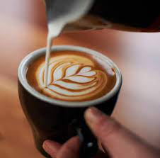
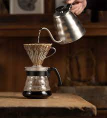

Arte Latte
- ROSETTA
- TULIPAN
- CORAZON

Metodos de Filtrado
- V60
- CHEMEX
- AEROPRESS
Experiencia Laboral
Barista en restaurante Lafayette de Villa Urquiza (2022)
Barista en Amelia Cafe de Caballito (2021)
Bachero en La Port de Puerto Madero (2020)
Estudios Cursados
- Barista recibido en CIC (centro internacional de cocteleria) - 2020
- Estudios universitarios en curso - Tecnico en programacion en UNAHUR
- Secundario terminado en escuela secundaria N°5 - 2013